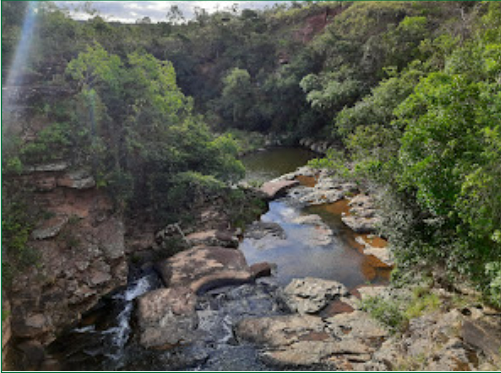
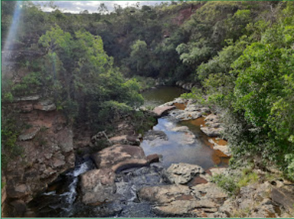
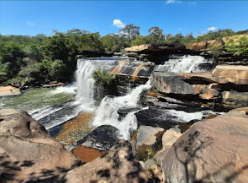
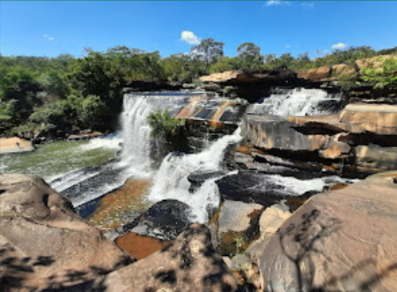
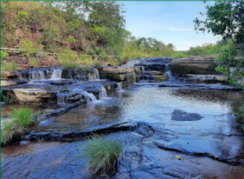
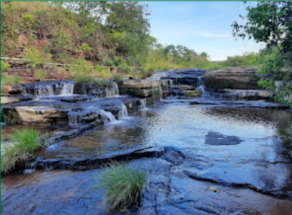

Cachoeira das Virgens
É um lugar lindo. A cachoeira tem 3 quedas e outras quedas de menor porte e poços para banho; entre paredões e canyons de aproximadamente 18 metros de altura, tem pontos em que se pode andar sobre as pedras. Não é difícil o acesso, fica entre o hotel Náutico e o Iate Clube Náutico. Tem que passar por uma trilha um tanto perigosa, pois tem certas partes de caminho estreito.


Cachoeira do Riachão
Localizada a apenas 40 km da cidade de Três Marias. Tem cerca de 3 metros de altura, sua imponente piscina natural impressiona com a largura de 25 metros, um cenário de beleza indescritível, oferece também trilhas nos arredores da cachoeira, é um convite irrecusável para os amantes da natureza.

Cachoeira da Barreirama
A cachoeira da Barreirama fica localizada na fazenda de mesmo nome, a apenas 12 km do centro de Três Marias. Sua queda é formada pelo riacho Pindaíba que deságua na represa. A queda d'água principal possui aproximadamente 30 metros até o poço de águas cristalinas cercado pela exuberância da vegetação ao redor.


Cachoeira das Pedras
A apenas 34 km de Três Marias, no Vilarejo das Pedras, conheça o lugar perfeito para um piquenique em família ou um momento de contemplação. Você será recebido pelo calor e hospitalidade dos moradores de estilo de vida tranquilo e acolhedor. O Vilarejo oferece trilhas que o levarão a lugares espetaculares, com quedas d'água majestosas. O Vilarejo não tem restaurantes, mas tem a venda do Tonho Maçarico, no molde antigo de vendinha local. O usual aqui é levar sua própria comida e compartilhar, fazendo um verdadeiro piquenique ao ar livre, em meio a paisagens deslumbrantes.

Cachoeira da Forquilha
A apenas 10 km da cidade de Três Marias, tem acesso fácil e prático; de águas puras e cristalinas, essa cachoeira é um refúgio perfeito. A queda d'água tem 18 metros de altura e uma largura de 25 metros. Oferece uma trilha de aproximadamente 1 hora de duração nas redondezas para quem busca relaxamento, aventura e contato direto com a natureza.
 

Cachoeira do Guará
Com quatro quedas impressionantes, a Cachoeira do Guará é formada pelo rio de mesmo nome. A queda principal possui oito metros de altura por 30 metros de largura, seguida por uma corredeira no rio. A 46 km de Três Marias, sua visão é um espetáculo de tirar o fôlego em um ambiente tranquilo e refrescante, perfeito para relaxar e apreciar a natureza exuberante ao redor. É próprio para trilhas e caminhadas, permitindo explorar a vegetação abundante e a vida selvagem da região.
 

Cachoeira das Palmeiras
Situada no Recanto da Zezé, com entrada pelo Beira Rio, já do lado de São Gonçalo do Abaeté, o outro lado da ponte sobre o Rio São Francisco. Em uma trilha de 30 minutos de descida, a Cachoeira das Palmeiras apresenta uma linda queda d'água e um bonito paredão, possui um poço muito bom para banho e uma segunda queda com um poço menor. As águas geralmente são límpidas, exceto em época de chuvas em que ficam um pouco barrentas. Ainda assim, não impede de curtir o passeio e o banho.


Cachoeira das Abelhas
Muito bonita, frequentada por muitos ciclistas, mas, ainda não mapeada.
 
